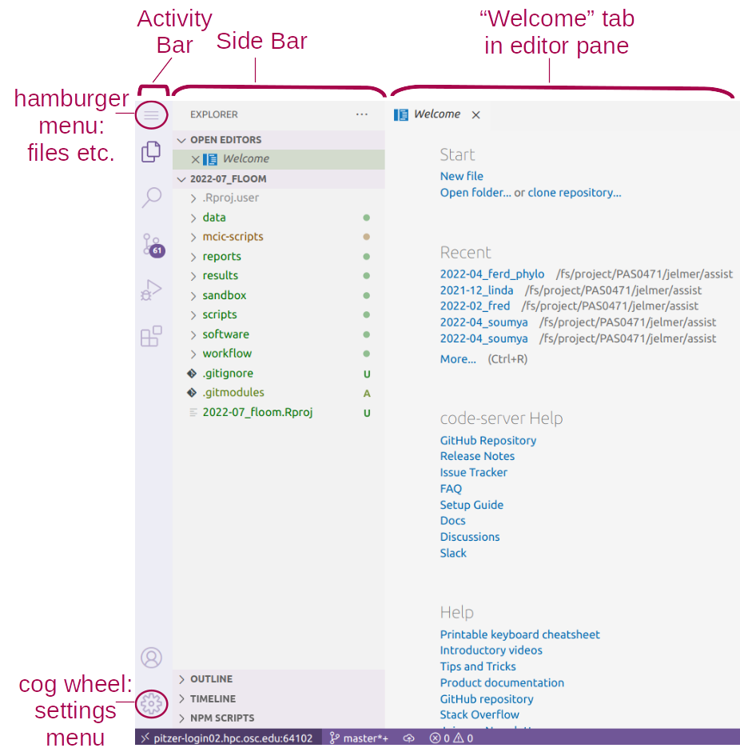

VS Code and Markdown
Week 2 - Part II
1 VS Code
1.1 Why VS Code?
VS Code is basically a fancy text editor. Its full name is Visual Studio Code, but at OSC, it is also referred to as “Code Server”.
To emphasize the additional functionality relative to basic text editors like Notepad and TextEdit, editors like VS Code are also referred to as “IDEs”: Integrated Development Environments. The RStudio program is another good example of an IDE.
Some advantages of VS Code:
- Works with all operating systems, is free, and open source.
- IDE-like features such as an integrated terminal.
- Very popular nowadays – lots of development going on including by users (extensions).
- Available at OSC OnDemand (and also allows you to SSH-tunnel-in with your local installation).
1.2 Starting VS Code at OSC
- Log in to OSC’s OnDemand portal at https://ondemand.osc.edu.
- In the blue top bar, select
Interactive Appsand near the bottom, clickCode Server. - Interactive Apps like VS Code and RStudio run on compute nodes (not login nodes). Because compute nodes always need to be “reserved”, we have to fill out a form and specify the following details:
| Option | Value |
|---|---|
The Number of hours we want to make a reservation for |
2 |
The Working Directory for the program |
your personal folder in /fs/ess/PAS2700/users (e.g. /fs/ess/PAS2700/users/jelmer) |
The Codeserver Version |
4.8 |
- Click
Launch. - First, your job will be “Queued” — that is, waiting for the job scheduler to allocate compute node resources to it:

- Your job is typically granted resources within a few seconds (the card will then say “Starting”), and should be ready for usage (“Running”) in another couple of seconds:

- Once it appears, click on the blue Connect to VS Code button to open VS Code in a new browser tab.
- When VS Code opens, you may get these two pop-ups (and possibly some others) — click “Yes” (and check the box) and “Don’t Show Again”, respectively:


1.3 The VS Code User Interface

Side bars
The Activity Bar (narrow side bar) on the far left has:
- A (“hamburger menu”), which has menu items like
Filethat you often find in a top bar. - A (cog wheel icon) in the bottom, through which you can mainly access settings.
- Icons to toggle (wide) Side Bar options:
- Explorer: File browser & outline for the active file.
- Search: To search recursively across all files in the active folder.
- Extensions: To install extensions (up soon).
- Source Control: To work with Git (next week).
- Debugger
- Click
View>Appearance>Activity Barto toggle the narrow side bar. - Press Ctrl+B to toggle the wide side bar
Editor pane and Welcome document
The main part of the VS Code is the editor pane. Here, we can open files like scripts and other types of text files, and images. (Whenever you open VS Code, an editor tab with a Welcome document is automatically opened. This provides some help and some shortcuts like to recently opened files and folders.)
Terminal (with a Unix shell)
Open a terminal by clicking => Terminal => New Terminal.
Create a directory for this week, e.g.:
# You should be in your personal dir in /fs/ess/PAS2700
pwd/fs/ess/PAS2700/users/jelmermkdir week02Exercise: Try a few color themes
- Access the “Color Themes” option by clicking =>
Color Theme. - Try out a few themes and see pick one you like!
2 A folder as a starting point
Conveniently, VS Code takes a specific directory as a starting point in all parts of the program:
- In the file explorer in the side bar
- In the terminal
- When saving files in the editor pane.
(If you need to switch folders, click => File => Open Folder.)
Resizing panes
You can resize panes (the terminal, editor, and side bar) by hovering your cursor over the borders and then dragging.The Command Palette
To access all the menu options that are available in VS Code, the so-called “Command Palette” can be handy, especially if you know what you are looking for. To access the Command Palette, click and thenCommand Palette(or press F1 or Ctrl/⌘+Shift+P).Keyboard shortcuts
For a single-page PDF overview of keyboard shortcuts for your operating system: =>Help=>Keyboard Shortcut Reference. (Or for direct links to these PDFs: Windows / Mac / Linux.) A couple of useful keyboard shortcuts are highlighted below.
Working with keyboard shortcuts for common operations can be a lot faster than using your mouse. Below are some useful ones for VS Code (for Mac, in some case, you’ll have to replace Ctrl with ⌘):
- Open a terminal: Ctrl+` (backtick) or Ctrl+Shift+C.
- Toggle between the terminal and the editor pane: Ctrl+` and Ctrl+1.
- Toggle the (wide) Side Bar: Ctrl+B
- Line actions:
- Ctrl+X / C will cut/copy the entire line where the cursor is, when nothing is selected (!)
- Ctrl+Shift+K will delete a line
- Alt+⬆/⬇ will move lines up or down.
Exercise: Install extensions
Click the gear icon and then Extensions, and search for and the install:
- shellcheck (by simonwong)
- Rainbow CSV (by mechatroner)
3 An introduction to Markdown
3.1 About Markdown
- Markdown is a very lightweight text markup language:
- Easy to write – a dozen syntax constructs is nearly all you use.
- Easy to read – also in its raw (non-rendered) form.
- For instance: surrounding one or more characters by single or double asterisks (
*) will make those characters italic or bold, respectively:- Writing
*italic example*— rendered as: italic example. - Writing
**bold example**— rendered as: bold example.
- Writing
Learn more about Markdown and its syntax in this excellent documentation: https://www.markdownguide.org/
4 Getting VS Code ready to try Markdown
- Hide the Side Bar to gain screen space: press Ctrl/⌘+B.
- Open a new file: Click the hamburger menu , then
File>New File. - Save the file (Ctrl/⌘+S), inside the dir you just created, as a Markdown file, e.g.
markdown-intro.md. (Markdown files have the extension.md.)
- When you save a file in VS Code with an
.mdextension:- Some formatting will be automatically applied in the editor.
- You can open a live preview of the rendered version by pressing the icon to “Open Preview to the Side” (top-right corner):
5 Most commonly used Markdown syntax
| Syntax | Result |
|---|---|
| *italic* | italic (alternative: single _) |
| **bold** | bold (alternative: double _) |
| [link text](website.com) | Link with custom text: link text |
|  | Figure |
| # My Title | Header level 1 (largest) |
| ## My Section | Header level 2 |
| ### My Subsection | Header level 3 – and so forth |
| - List item | Unordered (bulleted) list |
| 1. List item | Ordered (numbered) list |
`inline code` |
inline code |
``` or 4 leading spaces |
Start/end of generic code block |
```bash |
Start of bash code block (end with ```) |
--- |
Horizontal rule (line) |
In VS Code, when you select some text and then press *,
the selected text will be surrounded by asterisks.
Depending on the file type, this also works when typing the opening character for open-close characters like (), <>, *{} and [].
5.1 Whitespace in Markdown
- It’s recommended (in some cases necessary) to leave a
blank line between different sections: lists, headers, etc.:
## Section 2: List of ...
- Item 1
- Item 2
For example, ....- A blank line between regular text will start a new paragraph,
with some whitespace between the two:
This:
Paragraph 1.
Paragraph 2.Will be rendered as:
Paragraph 1.
Paragraph 2.
Ignored whitespace:
- A single newline in text
- Multiple consecutive spaces / blank lines are treated like a single space or blank line
This:
Writing
one
word
per
line.Empty spaceWill be rendered as:
Writing one word per line.
Empty space
This:
Many
blank linesWill be rendered as:
Many
blank lines
- A linebreak can be forced using two or more spaces (i.e., press the spacebar twice) after the last character on a line.
- If you want more vertical whitespace than what is provided between paragraphs, you’ll have to resort to HTML: each
<br>item forces a visible linebreak.
This:
One <br> word <br> per line
and <br> <br> <br> <br> <br>
several blank lines.Will be rendered as:
One
word
per line and
several blank lines.
If you need “inline colored text”, you can also use HTML:
inline <span style="color:red">colored</span> text.For systematic styling of existing or custom elements, you need to use CSS. For example, including the following anywhere in a Markdown document will turn all level 1 headers (
#) red:#<style> #h1 {color: red} #</style>
5.2 Pandoc to render Markdown files
Use Pandoc to render a Markdown file to, for example, HTML or PDF:
pandoc README.md > README.html
pandoc -o README.pdf README.mdFor installation (all OS’s): see https://pandoc.org/installing.html.
5.3 Markdown extensions – Markdown for everything?!
- Several Markdown extensions allow Markdown documents to contain code that runs, and whose output can be included in rendered documents:
- R Markdown (
.Rmd) - Jupyter Notebooks
- R Markdown (
- Many possibilities with Markdown! For instance, consider that:
- These slides are written using R Markdown
- Our Github course website is written using R Markdown
- R Markdown also has support for citations, journal-specific formatting, etc.
5.4 Some additional Markdown syntax
- Basic syntax:
| Syntax |
|---|
<https://website.com> |
| > Text |
- Extended syntax – not supported by all interpreters:
| Syntax |
|---|
| ~~strikethrough~~ |
| Footnote ref[^1] |
| [^1]: Text |
- Tables:
| syntax | result
|————|———-|
| *italic* | italic |
| **bold** | bold |
| syntax |
|---|
| *italic* |
| **bold** |